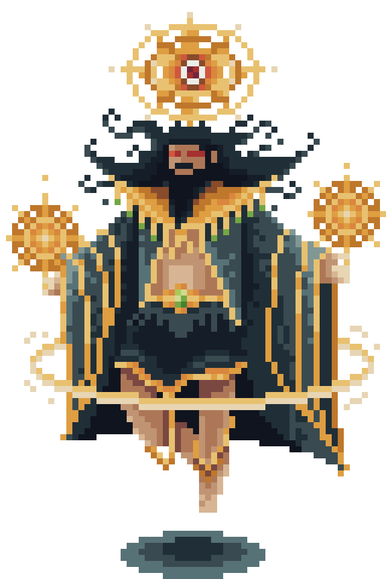

Ang Kaharian sa Ulap
Isang kahariang nakalutang sa pinakaitaas ng langit, balot ng makapal na ulap at kulog na walang tigil. Dito matatagpuan ang trono ni Bathala, kung saan ang Bato ng Pagsilang ay nakatago. Ang paligid ay puno ng naglalakihang puno na nababalot ng usok mula sa mga Kapre, na para bang bawat sanga’y gumagalaw upang harangin ang mga dayo. Ang sinumang mangahas pumanhik dito ay kailangang makipagsapalaran laban sa matitinding unos at nakabibinging kulog.
Nagbabantay

Bathala